Topics include:
Please see the online documentation for additional preferences information for other features.
To open the Preferences dialog, select:
Window > Preferences... for Windows and Linux
Eclipse > Preferences... for MacOS X
Next, expand Parallel Tools and Remote Development in the list of preferences pages on the left side and choose the component's preferences you wish to change. (You may see different items depending on which optional features you have installed.)
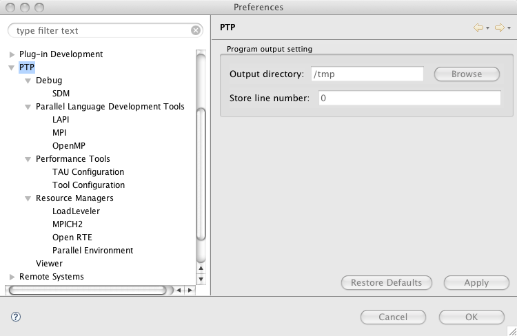
This is the main preferences parent page for PTP. Available preferences are in the items beneath it. Expand the tree to view these.
This is the main parallel debugger preferences page. These are preferences that apply to any parallel debugger.
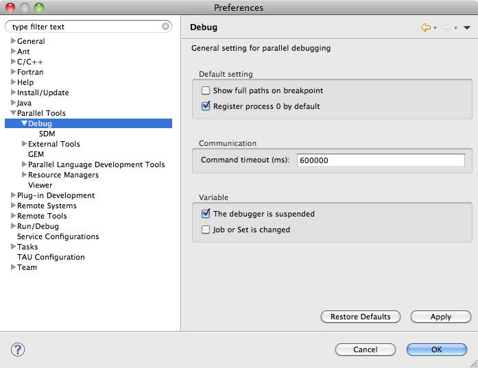
These preferences control some debugger default behavior
These are preferences relating to the communication between Eclipse and the external parallel debugger. They do not normally need to be changed.
These variables control the action of the debugger to update variable information.
These are preferences for controlling the behavior of the scalable debug manager, which is the server component of the parallel debugger. They do not normally need to be changed.
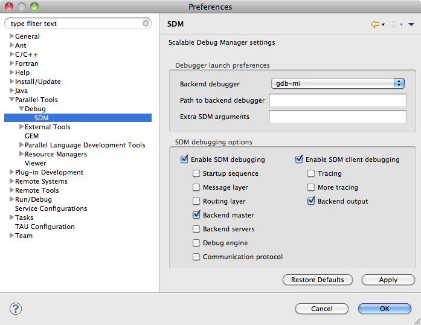
These preferences control how the debugger behaves when it is launched. They do not normally need to be altered.
These preference allow the SDM operation to be traced. They are normally only used by PTP developers.
This is a category for configuring external tools that are provided using the ETFw extensions. The contents may vary based on which (optional) ETFw features you have installed For more information see the ETFw wiki page.
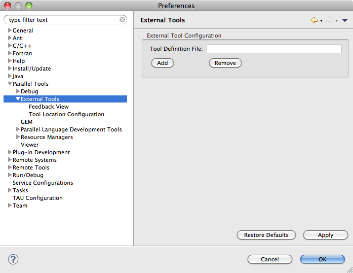
These preferences are used to configure ETFw
The Feedback view preferences page handles cases where extensions are installed that utilize the Feedback view.
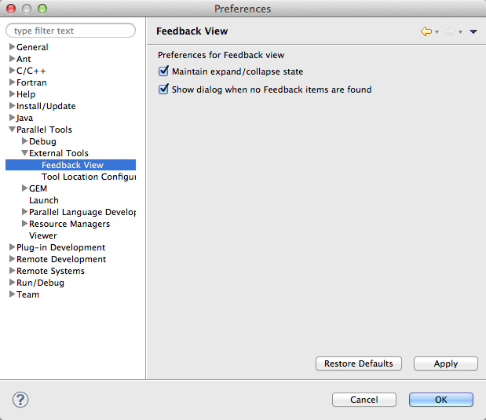
These preferences are used to configure the feedback view. See Feedback view for more information.
GEM is an optional feature of PTP. See the help for GEM including information about GEM Preferences
Allows configuration of perspective that automatically opens on a run and debug launch of a parallel application.
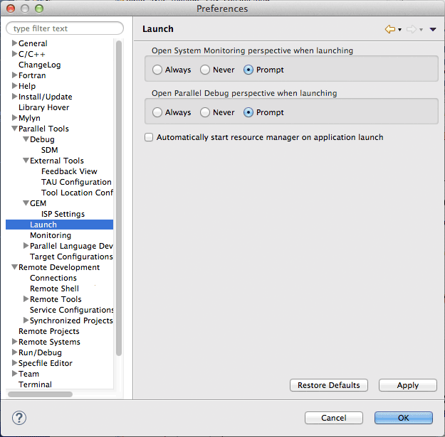
Provides some options for the System Monitoring Perspective
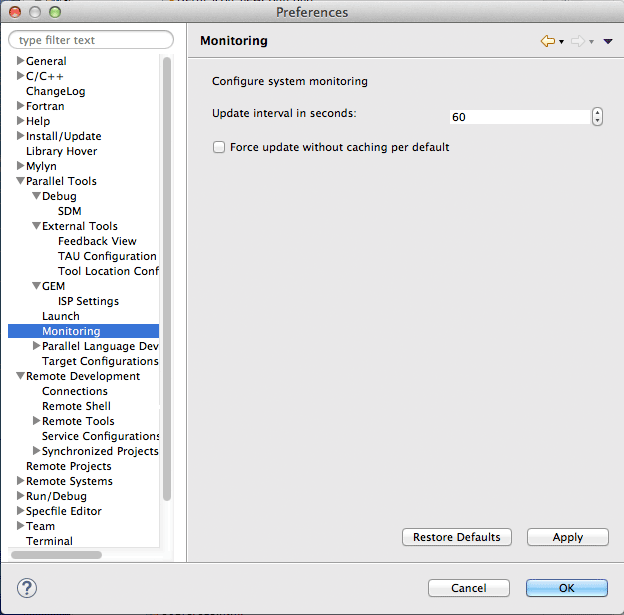
See the help for PLDT
The main page for Remote Development preferences allows specification of a default Remote Services provider. The default provider is used whenever new services are created - for example, new connections to remote machines.
The choices are:
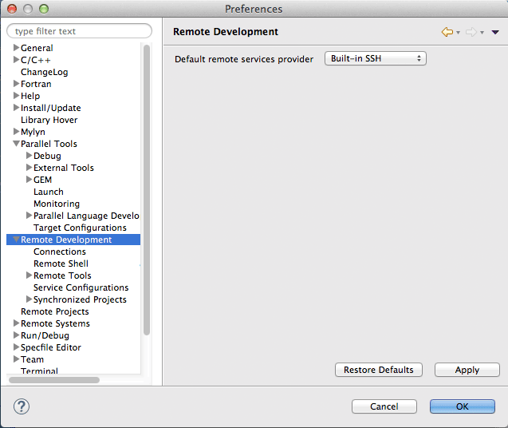
On the Connections page, connections can be added (created), edited (changed), removed, opened (started) and closed (stopped). Current connections for the selected Remote Service Provider (Built-in SSH, Remote Tools, or RSE) are shown. Note that a connection cannot be edited or removed when it is open. To edit or remove a connection, stop it first.
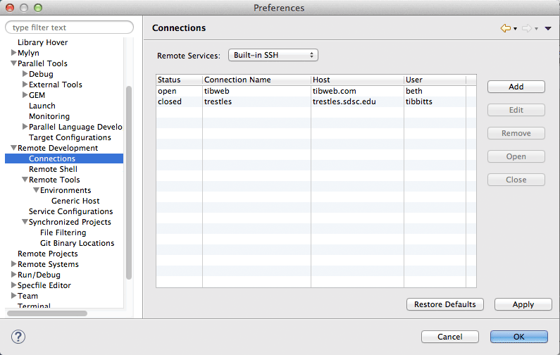
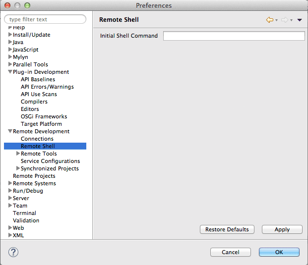
Default values for remote hosts created using Remote Tools.
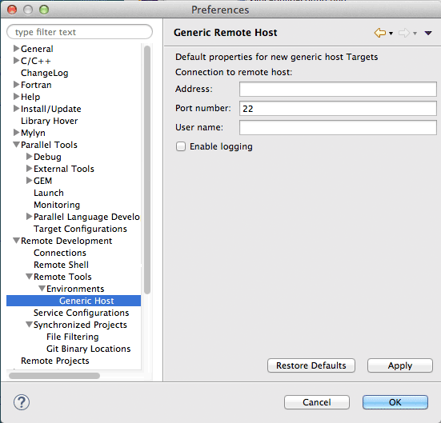
Service configurations are used to persist information about RDT remote projects. The service configuration preference page is only intended for developers and should only be used if you understand what you are doing.
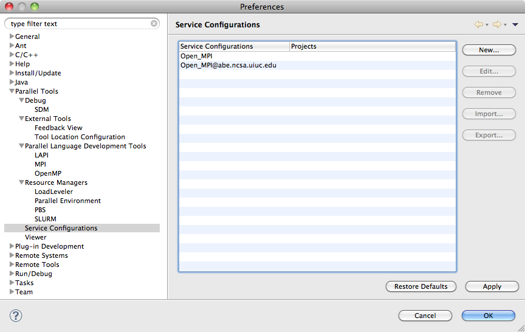
The preferences page for Synchronized projects > File Filtering includes setting defaults for file filtering. This allows files matching certain patterns to be excluded (or included) from the file synchronization. For example, you may want to add "*.o" as an exclude filter to not have object files sync'd back to the local file system after a compile creates them on the remote target. You may also want to add the executable that your project creates to be excluded. Besides changing the default filtering here, you can modify File Filtering on each project as well.
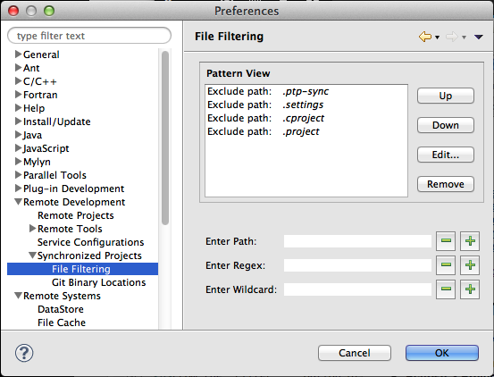
Git is used in synchronized projects implementation. If Git is not available in your path on the remote machine, it can be specified here. Specify the connection for each Git Binary Location you want to change.
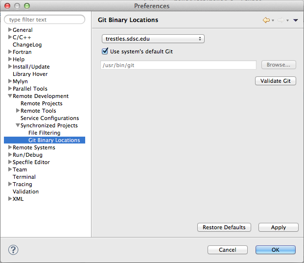